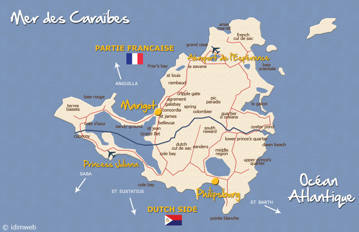
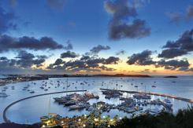

|  |
La géographie
L'île de Saint-Martin se situe au coeur de l'Arc Antillais, dans l'hémisphère Nord, entre le Tropique du Cancer et l'Equateur, plus exactement au Nord de l’archipel des Petites Antilles, née de la dérive de la plaque Atlantique s’enfonçant sous la plaque Caraïbes pour former un chapelet d’îles dont Saint-Martin. À 240km environ au Sud-Est, se trouve l'île de la Guadeloupe. Saint-Martin est baignée, à l'Est par l'Océan Atlantique et à l'Ouest par la Mer des Caraïbes. D'une superficie totale de 88km², l'île de Saint-Martin affiche 15km dans sa plus grande longueur et 13km dans sa plus grande largeur. L'île de Saint Martin occupe une position centrale au coeur de la mer des Caraïbes, à mi-distance entre Porto Rico et la Guadeloupe et constitue pour la France, le point le plus avancé des côtes américaines. Par avion, Saint-Martin se trouve à 3h30 de New York, à 2h30 de Miami (Floride), à 1h30 de Caracas (Venezuela), à 45 minutes des Iles de la Guadeloupe et de Porto Rico. En revanche, 7 000km environ la séparent de l'Europe, soit huit heures d'avion. Les îles voisines proches sont Anguilla, Saint-Barthélemy, Saba, Saint-Eustache, Saint-Kitts et Nevis. Longitude : 63.5° Ouest / Latitude : 18.5° Nord Altitude moyenne : 20 mètres Point culminant : Pic Paradis à 424 mètres |
|  |
Les activités
A Saint-Martin, le tourisme bleu est roi mais comment pourrait il en être autrement puisque l'eau est partout... Ile magique plantée tel un décor entre Océan Atlantique et Mer des Caraïbes, Saint-Martin permet à chacun de trouver son petit coin de paradis où il fait bon se baigner, bronzer, faire du sport ou tout simplement se reposer... Un seul point commun entre toutes ces plages : une mer chaude et limpide dont les beautés sous-marines peuvent s'explorer avec un simple masque et un tuba... Si elles ne sont pas les seules, les activités nautiques prédominent parmi toutes celles qui sont proposées sur l'île. Les conditions climatiques de l'air et de l'eau sont idéales toute l'année (entre 25° et 29° en moyenne) ainsi que les vents alizés réguliers pour pratiquer les sports nautiques en tous genres. Saint-Martin, côté terre... Depuis plusieurs années, Saint-Martin a mis l'accent sur une autre forme de tourisme, un tourisme complémentaire, de bien-être, sportif et culturel. Fer de lance de nombreuses campagnes de promotion, le Saint Martin «coté nature» a pris une réelle place dans tous les guides touristiques. Randonnées à pied ou à cheval, cyclotourisme et circuits en quad... une autre façon de découvrir une île paradisiaque et d'en revenir avec des souvenirs plein la tête de paysages, de sites, de patrimoines, d'histoire et de rencontres avec les populations locales... |